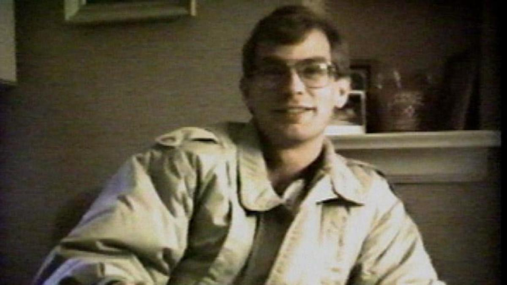

The Dahmer Case: An Overview of the Evidence
Originally published on The Dahmer Case Substack
Date: February 4, 2025
Jeff Dahmer was not a serial killer. He was a victim of human trafficking.
This conclusion is not based on speculation but on evidence gathered from public records, Freedom of Information Act (FOIA) requests, declassified documents, and undeniable video evidence.
This is all open-source intelligence. You can verify these findings yourself because we tell you where to look.
What I Believe To Be True About Jeff Dahmer
Steven Hicks died in 1978, but his death was accidental.
The death of Steven Hicks, Jeff's first alleged victim, was not a murder but an accident. The sources suggest that alcohol and a motor vehicle driven by Jeff may have been involved. For more information, see Jeff Dahmer's $10 Million Judgment: Why Did His Parents Escape Liability?
The Dahmer family covered up Steven Hicks’ accidental death.
The Dahmer family was in a state of turmoil at the time of Steven Hicks' accidental death. Lionel and Joyce Dahmer were in the process of divorcing, and there was a custody battle over Jeff's younger brother, David. Lionel was living in a motel with his then-girlfriend, Shari. Given these circumstances, it looks like the family covered up the accidental death of Steven Hicks to avoid having to deal with it. In other words, they had enough problems and didn’t need another one.
At some point, Jeff Dahmer confessed to participating in covering up Steven Hicks’ accidental death.
Given that the key players were all connected to the Archdiocese of Milwaukee, it’s possible that Jeff confessed to someone associated with the Archdiocese. That confession led to Jeff eventually starring in a fake news story about a “gay serial killer”.
Why I Don’t Believe The “Serial Killer” Story Told By The MSM
There are no signed guilty pleas.
A request to the Wisconsin Circuit Court revealed that the 15 signed guilty pleas that were televised do not actually exist. Without any signed guilty pleas, it cannot be said that Jeff Dahmer murdered anyone in Milwaukee.
Jeff Dahmer’s confession contains another man’s SSN.
Jeff Dahmer’s confession contained another man's Social Security Number (SSN). That man’s name is Eric Lamar Stanley. If you have access to Ancestry.com, you can verify this for yourself. The Milwaukee Police knew this because the FBI told them. Despite this, the SSN was never corrected on the confession. For more information, see Jeff Dahmer's Confession Contains Another Man's Social Security Number.
For more information, see The 15 Guilty Pleas Jeff Dahmer Supposedly Signed Do Not Exist.
Jeff Dahmer’s confession was not recorded.
Over 60 hours of alleged discussions with Detective Murphy were not taped or video recorded; instead, they relied on handwritten notes. The confession is the only key physical evidence admitted at the trial. For more information, see Jeff Dahmer's "Confession" Was Not Taped and Jeff Dahmer's Trial: An Exploration of the Peculiar Legal Process.
Alleged victims are missing from the Social Security Death Index (SSDI).
Fifteen of the alleged victims are not listed in the Social Security Death Index. Assuming they all had a Social Security Number (They were all Americans), this means their deaths weren’t reported to the Social Security Administration. Usually, a family member, attorney, or mortuary files a death benefit application. The SSA might also receive a death report from a funeral home, financial institution, postal authority, or state. So, the fact that 15 of the alleged victims are missing from the SSDI is suspicious. For more information, see 15 Dahmer victims are NOT in the Social Security Death Index (SSDI).
Some alleged victims died before or after the timeframe of the alleged murders.
Richard Guerrero died in 1960, and "Eddie" Smith died in 1999. For more information, see the following articles: Alleged Dahmer Victim Richard Guerrero Died in 1960 Alleged Jeff Dahmer Victim ‘’Eddie Smith” Died in 1999

Some alleged victims are still alive.
Curtis Straughter is still alive. His real name is Timothy Straughter. For more information, see Is This Man Alleged Jeff Dahmer Victim Curtis Straughter? Although Richard Guerrero died in 1960 when he was 6 months old, his brother, Reynaldo Guerrero is still alive and looks like the person the MSM said was Richard.

Konerak Sinthasomphone has all the signs of a fictional character.
We couldn’t find any official records for anyone named Konerak Sinthasomphone. Despite being portrayed as a victim of Dahmer, all background checks, state searches, and heritage inquiries yield no official results for anyone with this name. ‘‘Konerak’’ also looks exactly like Somsack Sinthasomphone. For more information, see Who Was "Konerak" Sinthasomphone?

Public records show 808 N. 24th Street was the District Attorney’s residence, not Jeff Dahmer’s.
The apartment at 808 N. 24th Street, where Somsack Sinthasomphone (alleged brother of “Konerak”) was allegedly molested by Jeff Dahmer, was actually the residence of District Attorney Michael McCann, not Jeff Dahmer. This casts serious doubt on the veracity of the molestation claim and strongly suggests a set-up by the DA.
For more information, see Why Did DA Michael McCann Share an Address with Jeff Dahmer?No mugshots were taken for Jeff Dahmer’s alleged two previous arrests, one of which was a felony.
Jeff Dahmer was supposedly arrested in 1986 for lewd and lascivious behavior and indecent exposure and in 1988 for Second Degree Sexual Assault and Enticing a Child for Immoral Purposes, a felony. However, no mugshots were taken for these two arrests. For more information, see What's the Truth about Jeff Dahmer's Previous Arrests?
Jeff Dahmer suffered from an autoimmune disease called polymyositis.
Jeff suffered from polymyositis, a debilitating autoimmune disease that causes muscle weakness. This condition would have made it physically impossible for him to carry out the gruesome acts he was accused of. The media concealed this fact. His condition was treated with steroids, which explains his rapid weight gain after his arrest. For more information, see Polymyositis: The Disease Behind Jeff Dahmer's Unusual Gait.
Jeff used lines verbatim from a movie script in his 1993 Inside Edition interview.
This indicates that he was reciting a pre-written script and not recounting actual events. See the following articles for more information: Jeff Dahmer is Acting - Quotes 1992 Movie Script Lines In 1993 TV Interview Jeff Dahmer was ACTING - Quotes 1992 Movie Script Lines WORD for WORD in 1993 TV Interview - Part 2
Jeff Dahmer was not charged with mutilating a corpse.
Jeff Dahmer was not charged with mutilating a corpse, which would have been expected in a genuine case. The lack of this charge is another inconsistency that suggests that the narrative was fabricated. For more information, see Why Wasn’t Jeff Dahmer Charged with Mutilating a Corpse?
Reputable background check services show only one conviction for Jeff, in Ohio.
Wisconsin, where the alleged murders occurred, doesn’t share any conviction information about Jeff Dahmer. For more information, see Background Checks for Jeff Dahmer Show ONE Conviction Only, in Ohio. Be sure to read the comments under this article.
Lionel Dahmer signed a movie deal before the trial had even begun.
Lionel Dahmer signed a movie deal just four months after Jeff's arrest and two months before the trial began. This is highly unusual and suggests that the events were staged. For more information, see Lionel Dahmer Signed a Movie Contract 2 Months Before Jeff Dahmer's Trial Started.
Jeff Dahmer had a talent agency.
Jeff Dahmer had an agreement with the Metropolitan Talent Agency. This is an oddity for a serial killer and highlights a direct connection to Hollywood, suggesting a fabricated narrative. For more information, see Jeff Dahmer's Letter to the Metropolitan Talent Agency.
The curious 1992 Allstate Insurance claim
A 1992 Allstate Insurance claim suggests that Lionel Dahmer, Joyce Dahmer, and Shari Dahmer were all involved in what happened in 1978 to Steven Hicks. In other words, this wasn’t just about Jeff. For more information, see Jeff Dahmer's $10 Million Judgment: Why Did His Parents Escape Liability?
Possible Motivation for the “Milwaukee Cannibal” Fake News Story
Did the focus on a sensationalized serial killer draw attention away from other events or scandals? The Archdiocese of Milwaukee may have been trying to protect its priests from accusations of sexual abuse. Did Jeff find out what was going on? Many key figures involved in the case, including District Attorney Michael McCann, Jeff's attorney Gerald Boyle, assistant DA Gregory J. O'Meara, and others, had ties to the Archdiocese of Milwaukee. Gregory O’Meara is now a Jesuit priest and the rector at Marquette University. For more information, see What Role Did The Archdiocese of Milwaukee Play In The "Jeff Dahmer, Serial Killer" Show? and When a Monster Appears Just in Time: Jeff Dahmer and Archbishop Weakland's Convenient Distraction.
Did Jeff Dahmer agree to play a gay serial killer to protect his parents?
Jeff may have agreed to star in this fake news story to protect his parents from the legal consequences associated with Steven Hicks' accidental death. All we know for sure is that Jeff Dahmer was not a serial killer, and the “Milwaukee Cannibal” story was a myth. Don’t take our word for this. Check out our facts for yourself. It’s all open source.